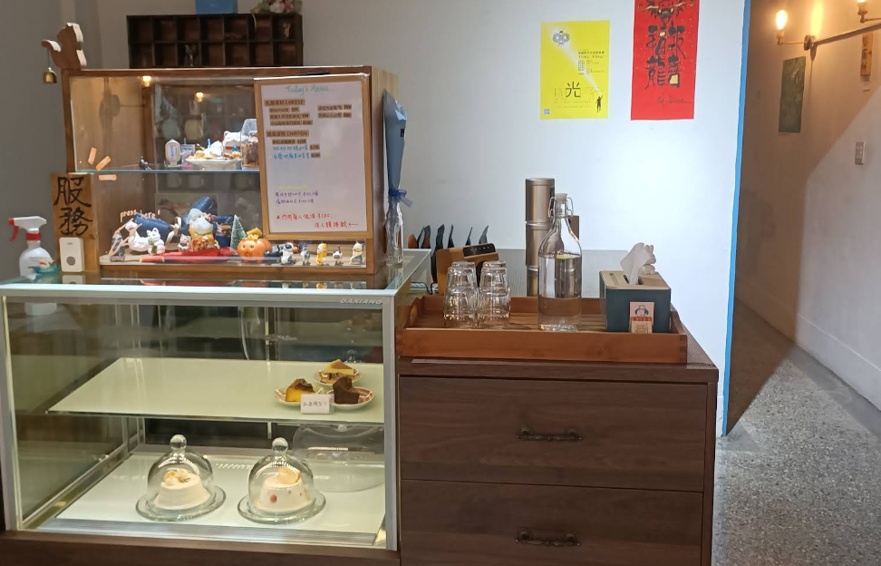
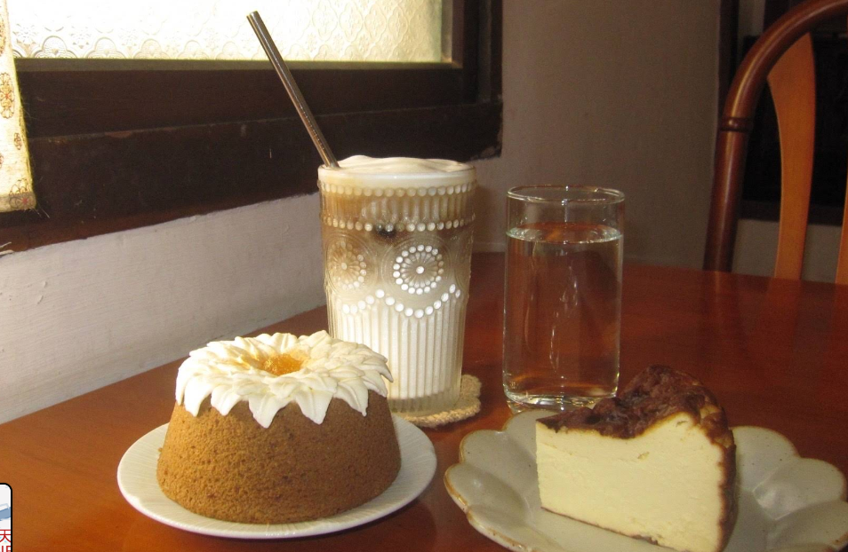

一天一天 ONE DAY ONE DAY
貓咪超級可愛，戚風蛋糕很好吃！
📍 店家資訊
地址：彰化市寶山路XX號
電話：04-XXXX-XXXX
營業時間：
10:00 - 19:00（週一公休）
社群平台：Facebook、Instagram
🌟 店家特色
一天一天咖啡廳是一間充滿溫馨氣氛的貓咪咖啡廳，店內有三隻可愛的貓咪陪伴客人度過悠閒時光。店內裝潢簡約溫馨，非常適合拍照打卡，也是許多學生喜歡來念書的地方。
店內的戚風蛋糕是招牌甜點，口感鬆軟不膩，搭配手沖咖啡更是絕配。整體環境安靜舒適，很有讀書氣氛，是學生族群的最愛。


🍽 推薦餐點
戚風蛋糕：店內招牌甜點，口感鬆軟濕潤，甜度適中不膩口，是許多客人必點的經典選擇。
手沖咖啡：使用精選咖啡豆現點現沖，保留咖啡最原始的香氣與風味，每一杯都是用心製作。
貓咪陪伴：店內三隻可愛貓咪會在店內走動，讓客人在享用餐點的同時，也能感受到毛孩帶來的療癒感。
離彰師大寶山校區騎車需要: 6 分鐘